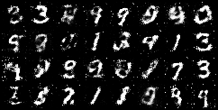
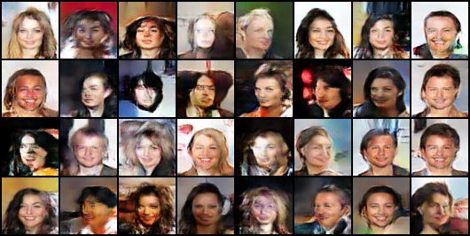
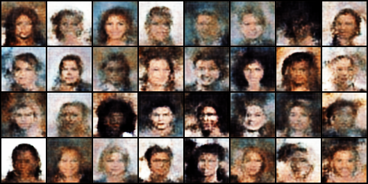
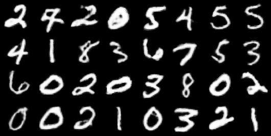
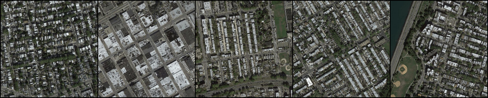

The simple GAN features two classes of networks: the Discriminator and the Generator. The Generator's job is to make an image from some noise of a certain number of dimensions--in this case, 64. The Generator passes the noise through a linear layer, leaky ReLU, linear layer, and tanh. In this network, the Generator and Discriminator flatten the image down from 28 by 28 pixels to 784.
The Discriminator's job is to tell if an image is real or fake. It takes in the flattened image and passes it through a linear layer, leaky ReLU, linear layer, and sigmoid.
We train the Discriminator and Generator separately. The Discriminator trains to max log(D(real)) + log(1 - D(G(z))). D(real) is the discriminator classifying the real image as real, and G(z) is the fake image, so D(G(z)) is the discriminator classifying the fake image as real. The Generator tries to max D(G(z)). As they train, the Discriminator gets better at telling the difference and the Generator gets better at fooling the Discriminator.
This is what you get. Can you tell which is real and which is fake?
The innovation of DCGAN (Deep Convolutional GAN) is that it uses convolution, a natural choice for images. The Discriminator uses blocks of convolution, batch normalization, and leaky relu, ending with a sigmoid. The interesting part is that it uses strided convolutions, which upscale the image in terms of the number of features/channels. The Generator uses fractional-strided convolutions, which decrease the number of features over each layer but increases the dimensions. We also initialize the weights to be Gaussian with a mean of 0 and standard deviation of 0.02.
Here is how the Discriminator trains. It first resizes and normalizes the images by subtracting 0.5. For each real image in each epoch, it generates noise and a fake image from it (G(z)). Then the discriminator checks out the real image (D(real)) and the fake image (D(G(z))), and a real and fake loss is generated from each. The losses are averaged and back propagation is initiated. The Generator is just trained the loss from D(G(z)).
This is what you get. Can you tell which is real and which is fake?
I think this is really amazing. With very standard neural networks arranged in a clever way to train against each other, you produce authentic-looking faces. Imagine if you train longer or optimize the parameters what you could do. I leave it as an exercise to the reader.
The WGAN has a few modifications on the DCGAN which I do not fully understand. It has a new loss function and trains the Critic (formerly called Generator) 5x more than the Discriminator. The benefits are that it is more stable and has a meaningful loss. One issue with DCGAN is that it is extremely sensitive to the hyperparamters. If you choose poorly, the model may sputter out of control and not reach a good spot. Another issue is that the loss is not particularly meaningful for tracking progress. WGAN attempts to solve these problems.
This is what I got. It doesn't seem to be as good as DCGAN with the parameters I chose.
This GAN simply produces output conditional on a class. This allows us to have some direction on the output instead of having it the result of some noise. Here it's not obvious (at least to me) which set is real and which is fake, but the fake one is being generated with the same classes as the real one.
Pix2Pix is different. Instead of giving the Generator noise and getting some image, you give it a certain image and get back a different one. For example, you can give it a 2-year-old's drawing of a tree, and it can give you a realistic tree. You can give it Google Maps and it can give you Google Earth. It can colorize images.
Pix2Pix uses conditional GANs, which generate images conditional to a certain class as opposed to any class. It also learns the loss function instead of using a manmade chosen one (binary cross-entropy). Using that outputs blurry results since it averages all plausible outputs.
The Generator uses a variation of U-Net. You take an image and downsample it with some convolutional layers, and then upsample it again like in DCGAN. Downsampling involves increasing the number of channels/features. Normally an image has one channel if it's black and white or three channels if it's RGB, to give you an idea of what that means. Upscaling involves the reverse. In the downscaling portion, you boil down the image into its features. In the upscaling, you learn where in the image they are and how to represent them.
The Discriminator, instead of taking just an image, takes in both x and y, the black-and-white image and the color image, for example. It uses something called PatchGAN, which "penalizes structure at the scale of patches." It tries to classify if N x N patches of the image are real or fake, not the whole image. This can be applied to arbitrarily-large images. Specifically, if you have 256x256 images, the output of that is an Nx1x30x30, tensor, which is a 30x30 image of patches. The paper also used a learning rate of 2e-4 and Adam solver with B1 (momentum) = 0.5 and B2 (exponential average) = 0.999.
The researchers tried different patch sizes. They found that 70x70 works the best, while lower values result in blur and artifacts.
Training the model involves, for each x, y pair, creating a fake image and discriminating against both of those. Then, average the bce loss of the fake and real to train the discriminator. Training the generator involves taking the fake loss and combining it with an L1 loss of y and y_fake * l1_lambda.
This particular network was trained to convert satellite images to simpler digital maps. As you can see, it does an okay job. It gets the general gist of it, but it's blurry and has artifacts as well.